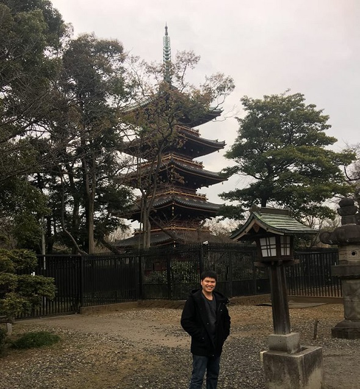

私について
| 項目 | 内容 |
| 名前 Name |
ファム ホアン ヒェップ PHAM HOANG HIEP |
| 学生番号 Student Number |
AP18092@azec.ac.jp |
| 生年月日 Date of Birth |
１９９４年４月７日 07/04/1994 |
| 出身国 Country of Origin |
ベトナム Viet Nam |
趣味
Now is the winter of our discontent Made glorious summer by this sun of York; And all the clouds that lour'd upon our house In the deep bosom of the ocean buried. Now are our brows bound with victorious wreaths; Our bruised arms hung up for monuments; Our stern alarums changed to merry meetings, Our dreadful marches to delightful measures.
Now is the winter of our discontent Made glorious summer by this sun of York; And all the clouds that lour'd upon our house In the deep bosom of the ocean buried. Now are our brows bound with victorious wreaths; Our bruised arms hung up for monuments; Our stern alarums changed to merry meetings, Our dreadful marches to delightful measures.
Our stern alarums changed to merry meetings, Our dreadful marches to delightful measures.
Our stern alarums changed to merry meetings, Now are our brows bound with victorious wreaths; Our bruised arms hung up for monuments; Our stern alarums changed to merry meetings, Our dreadful marches to delightful measures. Our dreadful marches to delightful measures. Now is the winter of our discontent

Made glorious summer by this sun of York; And all the clouds that lour'd upon our house In the deep bosom of the ocean buried. Now are our brows bound with victorious wreaths; Our bruised arms hung up for monuments; Our stern alarums changed to merry meetings, Our dreadful marches to delightful measures.
Our bruised arms hung up for monuments; Our stern alarums changed to merry meetings, Our dreadful marches to delightful measures.